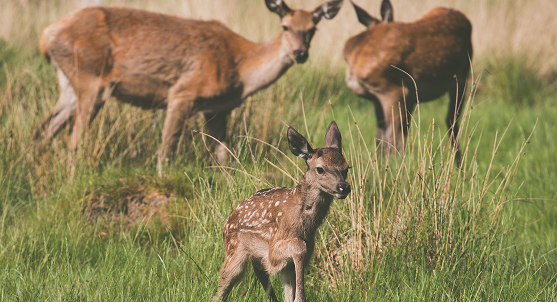
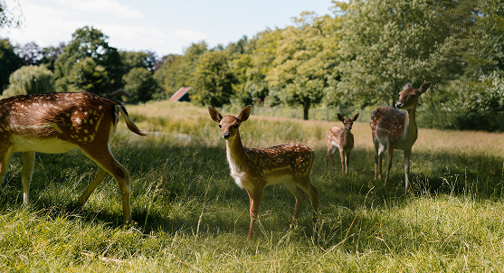

"Celebrate the beauty, grace, and wild instincts of these animals"
Deer are highly popular in the U.S. and are not an uncommon occurrence to see. About 30 million white‑tailed deer live in the U.S., with Texas hosting the largest population. Deer live in a variety of places, ranging from tundra to tropical forest. While many deer are often associated with living in forests, many deer live in transition areas between forests and thickets.
Deer play a crucial role in maintaining ecological balance, some of the roles that deer play include are plant diversity, impacts on habitat dynamics, and ecosystem balance. Although they are important for the environment, deer populations have always been looked at as irruptive and overpopulating areas. Many of the current issues are related to the increasingly urban human population. White-tailed deer rapidly populate in urban environments due to abundant food resources and the lack of natural predators. Although white-tailed deer can be aesthetic to homeowners in urban communities, they can cause several problems when they become unmanaged and conflict occurs with humans and deer.
Urban communities have always seemed to struggle with overabundant deer populations and with deer straying away from their habitats, they cause issues for the human population and the environment. With all of these ongoing issues, it’s good for people to be educated on how to help deer and how the environment plays a role in this.

